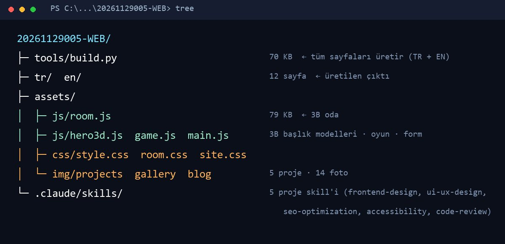

1. İsteği net yaz
Yapay zekâ, ne istediğini ne kadar net anlatırsan o kadar iyi sonuç veriyor. Önce ödev şartlarını (TR/EN, her sayfaya ayrı başlık ve açıklama, mobil uyum, SEO) tek tek yazdım, sonra hayalimi anlattım: gökdelendeki bir odada uyanıp gezmek. Şartları ve hayali ayrı tutmak hem kontrolü hem düzeltmeyi kolaylaştırdı.
2. Tek kaynaktan çok sayfa üret
12 sayfanın (6 TR, 6 EN) hepsini tek bir Python dosyasından, build.py'den üretiyorum. Metinleri iki dilli yazıyorum, böylece çeviriler birbirinden kopmuyor:
t("Hakkımda", "About")
py tools/build.py # tr/ ve en/ sayfalarını yeniden üretir
tools/build.py ile üretiliyor.
Tavsiyem: üretilen dosyaları elle düzenleme. Bir sonraki derleme hepsini ezer.
3. Performansı en başta düşün
3B sahneler kolayca kasabiliyor. Gölgeleri bir kez hesaplamak, açılışta ağır işleri önceden yapmak ve ekran kartına göre kalite seviyesi seçmek işe yaradı. Adresin sonuna ?perf=1 ekleyince fps ve çizim sayısını görüyorum, yani tahmin etmek yerine ölçüyorum.
4. Denetim listeleri kullan
Projeye beş skill ekledim: frontend-design, ui-ux-design, seo-optimization, accessibility ve code-review. Her biri bir kontrol listesi gibi çalışıyor: başlık ve açıklama tekrarları, klavye erişimi, kasma riski gibi şeyleri her değişiklikten sonra denetliyor.
Tavsiyelerim
- Önce şartları yaz, sonra hayal et.
- Her değişiklikten sonra çalıştır ve gözle kontrol et; yapay zekâ da hata yapar.
- Küçük adımlarla ilerle ve düzenli yedek al.
- Performansı ölç, tahmin etme.
- Erişilebilirliği sona bırakma.